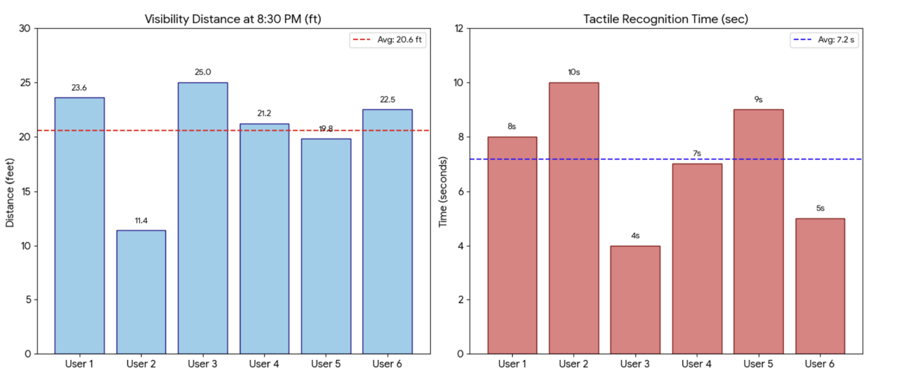
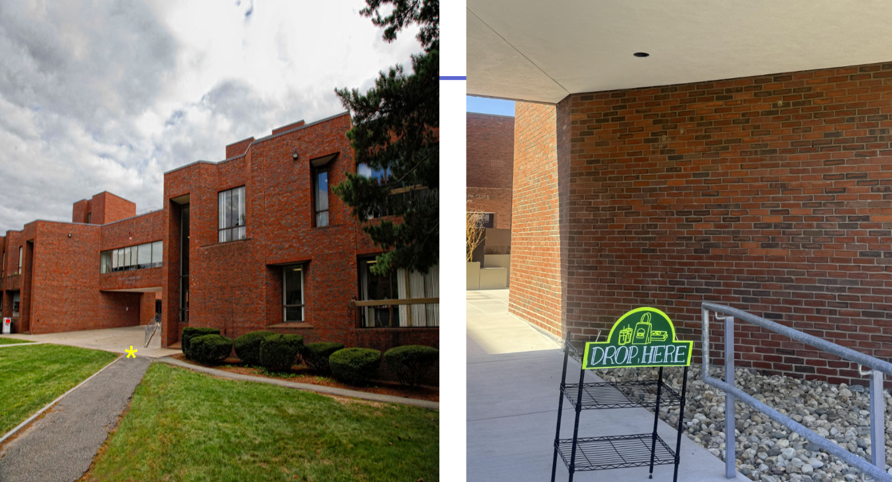

Capstone Project: The Accessible Delivery Hub
Design Process/Pivot Overview
The process of designing our solution for this project was much more involved than I could have anticipated. Success was defined by our goal of creating a sign that was visible from over 10 feet away and could be identified by touch. Our broader goal was to improve the food delivery process at Brandeis, making the process easier for drivers and students, while expanding accessibility to students with different disabilities. The first cycle was a 1/2 scale wooden prototype of the sign. This first prototype cemented our design and font choices, however eliminated wood as a viable material and suffered from poor low light visibility. This poor visibility was a focus during our second iterative cycle of CAM changes. We focused on changes in laser parameters, using line interval and DPI scanning with increased laser power and decreased speed to improve the definition of the text. We also employed engraving mode, allowing the text to be etched into the sign rather than the laser cutter considering the text as an image file. However, as this was the first iteration to be printed at full scale, a new difficulty was encountered, as the full scale sign proved to be too tall to be stable in strong wind. In our third iterative cycle of CAD changes, this was addressed by shortening the top of the sign. Additionally, holes for zipties were integrated into the sign to allow additional security under windy conditions as compared to our previous method of securing the sign to the shelf, clips. Our final CAD change was the addition of braille text to allow any vision impaired individuals who can interpret braille to more easily interact with the sign. Finally, we addressed the need to change materials in our fourth iterative cycle. Wood was thrown out in favor of acrylic and vinyl. Additionally, reflective tape was added to improve visibility. This addition was by far the most impactful, as it drastically aided in low light visibility, allowing an average visibility distance of 20.6 meters. Additionally, the reflective tape allowed the sign to achieve 70% contrast. This marks the pivot from wood to acrylic, vinyl, and reflective tape as the most significant change made throughout this iterative process.
Design Validation
Upon completion of our sign, we subjected it to simple testing for detection by touch and by sight. A test subject was made to stand over 30 feet from the sign after dusk and slowly approach the sign, stopping once they could read the full text on the sign. This distance between the test subject and the sign was measured using a tape measurer and recorded. Similarly, test subjects were made to feel the sign until they could identify specific parts of it, with the timer starting when they first lay hands on the sign. Unfortunately, the identification by touch portion of the testing unfortunatelhy doesn't encompass braille identifcation, as we were unable to successfully identify any potential test subjects who could interpret braille. This testing found an average distance to identify visually of 20.6 feet and an average time to identify tactiley of 7.2 seconds, both of which with a total success rate of 100%.

Testing was conducted outside of the Usdan building:
The Dozuki guide for this project can be found here:
Reflection
Throughout this project, a number of different ideas were considered. The direction of the project was pivoted several times. Originally, we had intended to fully install the Accessible Delivery Hub, complete with a GPS pin and environmental protection. As the GPS pin became to difficult to get placed by the school administration, this had to be cut out. Similarly, although protective boxes had been designed and fitted to each stage of the shelf, time constraints prevented their printing and installation. This led to a nearly exclusive focus on the sign, with the shelving acting as a minor secondary consideration. Despite this reduction in scope, we achieved the major quantitative criteria for success that we originally aimed to achieve, those of rapid identification through visual and tactile elements of the sign.